{kind=link}
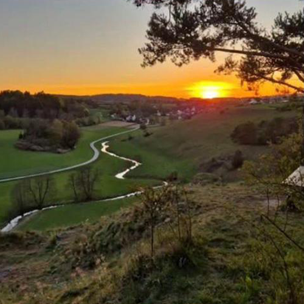
Heutal — Natur, die man nicht ersetzen kann.
Eine einzigartige Landschaft voller Ruhe, Schönheit und Heimatgefühl. Bewahren wir, was unsere Region so besonders macht.
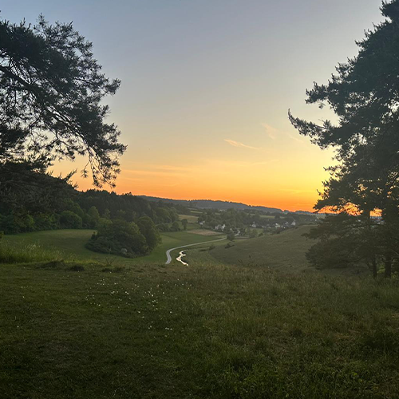
Unsere Wälder sind mehr als nur eine Fläche auf der Landkarte. Sie sind Heimat, Rückzugsort, Lebensraum und Teil unserer Identität. Wir stehen für eine verantwortungsvolle Energiepolitik — aber gegen die Zerstörung gewachsener Waldgebiete durch massive Eingriffe und Windkraftanlagen im Herzen unserer Natur. Fortschritt darf nicht bedeuten, dass unwiederbringliche Natur verloren geht. Energie ja — aber mit Rücksicht auf Wald, Tiere, Menschen und unsere Heimat.
Jede Unterschrift zählt – PDF herunterladen, ausdrucken und unterstützen.
Sende die Liste anschließend an die unten genannte Mailadresse zurück.
Oder gib deine Unterschrift direkt in der Kirche in Wissing ab.
Der Landkreis Neumarkt produziert bereits 140% erneuerbare Energien - wir haben bereits genug geleistet!
Jede einzelne Unterschrift und Stimme hilft uns.

Eine einzigartige Landschaft voller Ruhe, Schönheit und Heimatgefühl. Bewahren wir, was unsere Region so besonders macht.
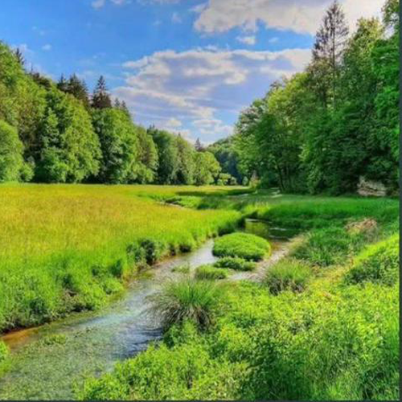
Damit unsere Kinder dieselben Wege gehen, dieselbe Natur spüren und dieselbe Heimat erleben können.
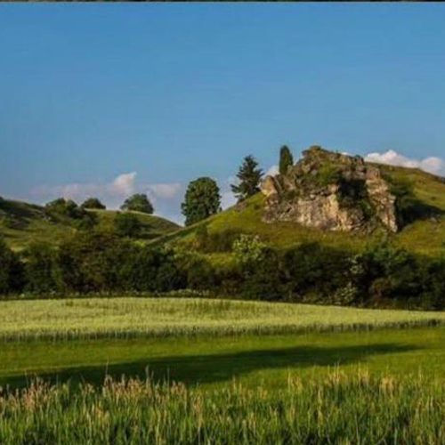
Wo Menschen Ruhe finden, Kinder spielen und Radfahrer die Natur erleben.
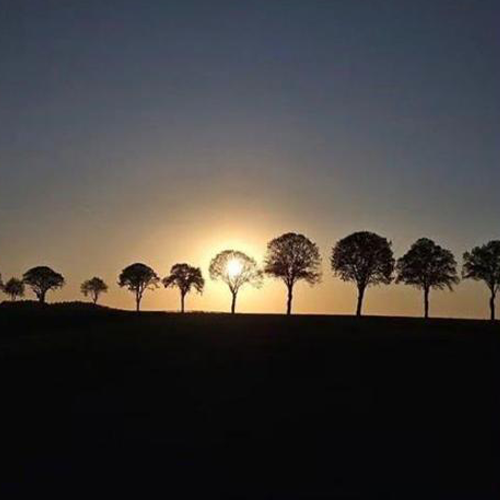
Das Heutal verbindet Mensch, Bewegung und Natur auf einzigartige Weise.
Aktueller Ausblick über Wissing - Unser Dorf war immer ein Ort der Ruhe. Wenn man morgens aus dem Fenster blickt, sieht man Felder, Wälder und den freien Himmel – eine Landschaft, die seit Generationen unsere Heimat prägt. Genau dieser Ausblick gibt vielen Menschen hier ein Gefühl von Frieden, Vertrautheit und Lebensqualität.
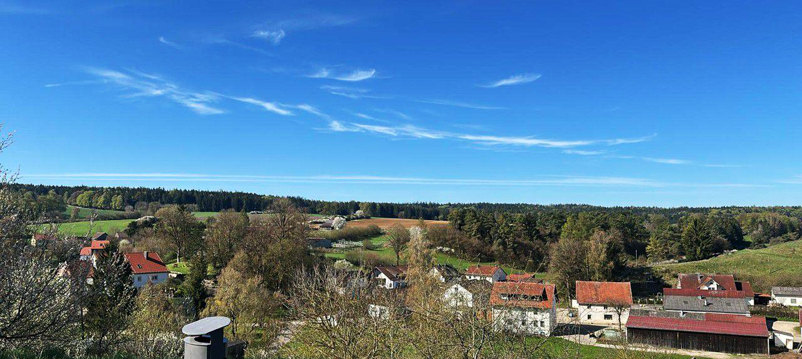
Mit dem Bau großer Windräder würde sich dieses Bild grundlegend verändern. Statt weiter Horizonte und natürlicher Landschaft würden riesige Industrieanlagen den Blick bestimmen – Tag und Nacht sichtbar, mit blinkenden Lichtern und ständig rotierenden Rotoren. Das vertraute Gefühl unseres Dorfes würde verloren gehen.
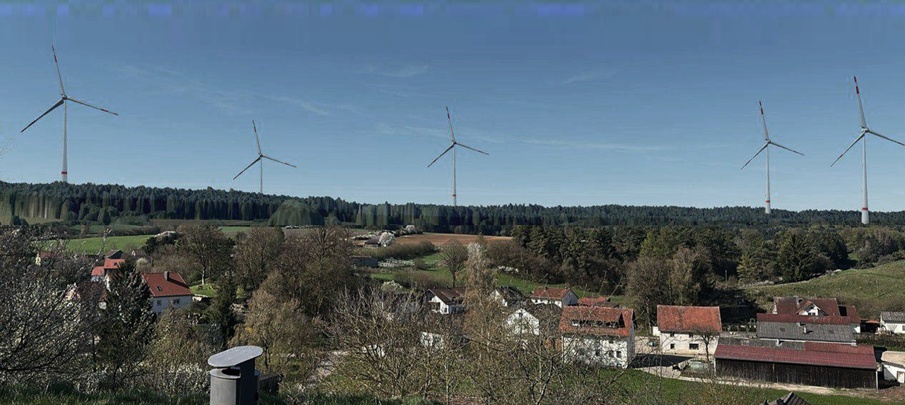
Viele Menschen sind nicht grundsätzlich gegen erneuerbare Energien. Aber es macht einen Unterschied, ob man Windräder irgendwo in der Ferne sieht oder ob sie direkt das eigene Zuhause und die Identität eines ganzen Dorfes verändern. Unsere Landschaft ist mehr als nur freie Fläche – sie ist Teil unserer Geschichte, unserer Erinnerungen und unseres täglichen Lebens. Kinder wachsen hier mit Natur und Ruhe auf. Spaziergänge, Sonnenuntergänge und der Blick über die Felder gehören zu unserem Alltag. Wenn dieser Ausblick von meterhohen Windrädern geprägt wird, geht ein Stück Heimat verloren, das man später nicht einfach zurückholen kann. Fortschritt darf nicht bedeuten, dass der Charakter unseres Dorfes geopfert wird. Was einmal zerstört oder verändert wurde, bleibt für Jahrzehnte sichtbar. Deshalb wünschen sich viele Menschen, dass unsere Landschaft und das besondere Ortsbild geschützt werden.
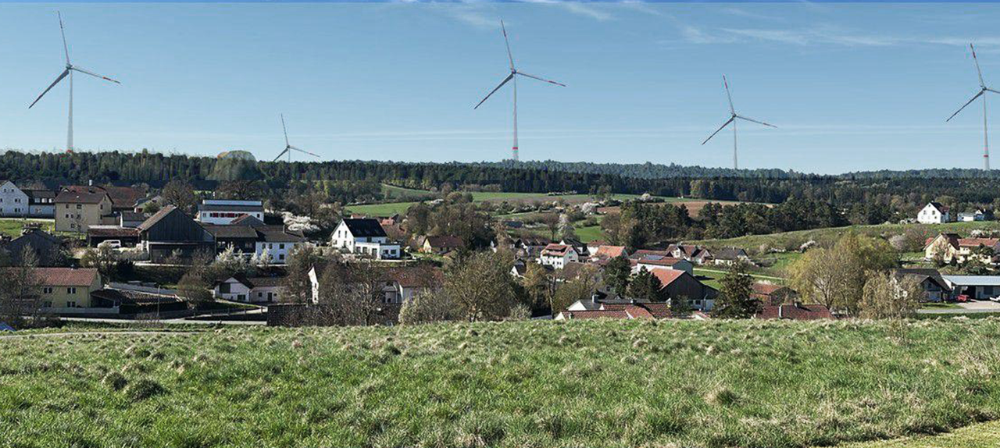
Der einst freie und idyllische Ausblick über unser Dorf würde durch die riesigen Windräder dauerhaft zerstört und seinen natürlichen Charme verlieren.
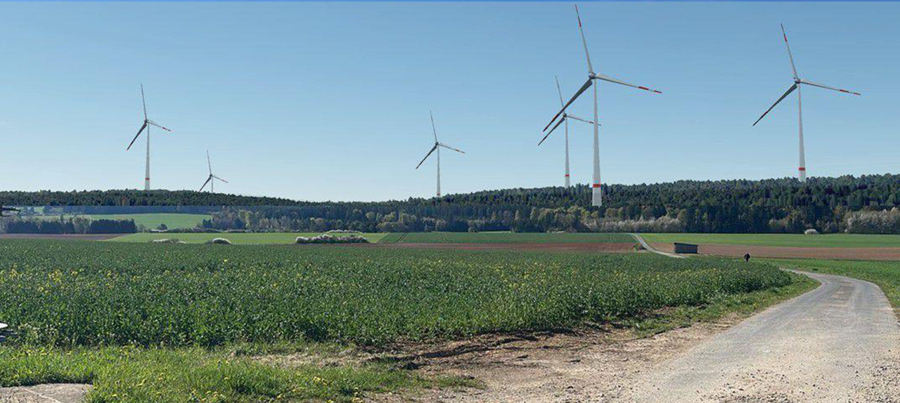
Ein Ort der Gemeinschaft, in dem viele Feste in natürlicher Umgebung gefeiert werden - Die gewaltigen Windräder würden in bedrückender Nähe zu unseren Dörfern aufragen, den Himmel überragen und mit ihrem ständigen Schattenwurf täglich Unruhe und ein Gefühl der Belastung in unser Zuhause bringen.
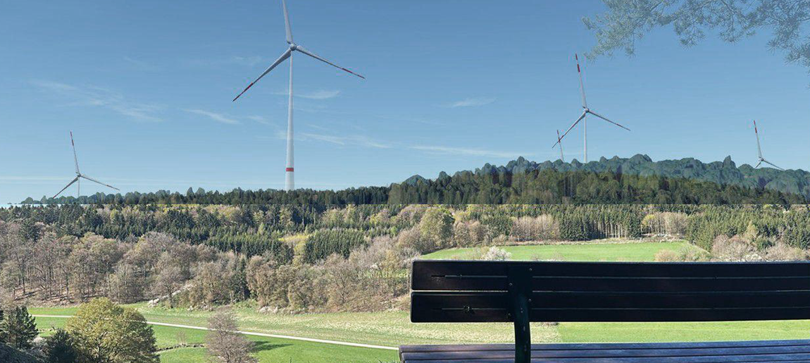
Einer der schönsten Aussichtspunkte unserer Umgebung würde unwiederbringlich verändert werden – ein Ort, an dem bereits unzählige Hochzeits- und Familienfotografien entstanden sind, um besondere Erinnerungen für ein Leben festzuhalten. Ein Platz, der für viele Menschen Ruhe, Weite und Erholung bedeutet, droht seinen einzigartigen Charakter zu verlieren.
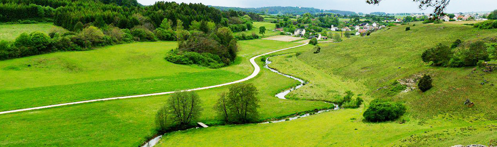
Unser Heutal so wie es bleiben soll. Grün, natürlich und voller Ruhe.
In einem rund 40 Kilometer langen Band erstreckt sich das Natura-2000-Gebiet von Neumarkt aus nach Süden über die Ortschaften Deining und Holnstein bis nach Dietfurt an der Altmühl sowie von Wissing bis nach Breitenbrunn. Es zählt zu den wertvollsten und beeindruckendsten Naturräumen der mittleren Frankenalb.
Zahlreiche Flüsse, Bäche und Gräben durchziehen dieses einzigartige Gebiet. Zu den wichtigsten Gewässern gehören die Unterbürger Laber, die Weiße Laber, die Breitenbrunner Laber sowie die Wissinger Laber. Ergänzt werden sie von einer Vielzahl kleiner Bachläufe und natürlicher Wasseradern, die die Landschaft prägen und zahlreichen Tier- und Pflanzenarten einen geschützten Lebensraum bieten.
Damit bildet das FFH-Gebiet einen der größten zusammenhängenden naturnahen Fließgewässerkomplexe der mittleren Frankenalb. Gleichzeitig stellt es ein außergewöhnlich repräsentatives Talsystem dieser einzigartigen Landschaft dar – mit einer weitgehend ungestörten Verbindung aus hochwertigen Trockenlebensräumen, seltenen Orchideen-Buchenwäldern, wertvollen Talvermoorungen und empfindlichen Kalktuffquellen.
Diese Landschaft ist weit mehr als nur Naturraum – sie ist ein kostbares Stück Heimat, geprägt von Ruhe, Ursprünglichkeit und einer Artenvielfalt, die in dieser Form nur noch selten zu finden ist.
{kind=link}
{kind=link}
{kind=link}
{kind=link}
{kind=link}
{kind=link}
{kind=link}
{kind=link}
{kind=link}